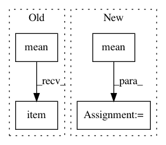

284f27c366884ed821b6c7b1ed37b32fa51f8c25,se3cnn/non_linearities/rescaled_act.py,ShiftedSoftplus,__init__,#ShiftedSoftplus#Any#,16
Before Change
class ShiftedSoftplus:
def __init__(self, beta):
x = torch.randn(100000, dtype=torch.float64)
self.factor = torch.nn.functional.softplus(x, beta).pow(2).mean().rsqrt().item()
self.shift = torch.nn.functional.softplus(torch.zeros(()), beta).item()
self.beta = beta
def __call__(self, x):
After Change
x = torch.randn(100000, dtype=torch.float64)
self.shift = torch.nn.functional.softplus(torch.zeros(()), beta).item()
y = torch.nn.functional.softplus(x, beta).sub(self.shift)
self.factor = y.pow(2).mean().rsqrt().item()
self.beta = beta
def __call__(self, x):
return torch.nn.functional.softplus(x, self.beta).sub(self.shift).mul(self.factor)
In pattern: SUPERPATTERN
Frequency: 3
Non-data size: 4
Instances
Project Name: mariogeiger/se3cnn
Commit Name: 284f27c366884ed821b6c7b1ed37b32fa51f8c25
Time: 2019-08-08
Author: geiger.mario@gmail.com
File Name: se3cnn/non_linearities/rescaled_act.py
Class Name: ShiftedSoftplus
Method Name: __init__
Project Name: ecs-vlc/torchbearer
Commit Name: eca70286a076bcabd6a6690181a57f7da7ab30da
Time: 2019-01-24
Author: ewah1g13@soton.ac.uk
File Name: torchbearer/metrics/aggregators.py
Class Name: RunningMean
Method Name: _process_train
Project Name: rusty1s/pytorch_geometric
Commit Name: 6b0a84c6977fc79bb2953d55e4d36db530f35496
Time: 2019-11-05
Author: matthias.fey@tu-dortmund.de
File Name: examples/qm9_nn_conv.py
Class Name:
Method Name: